Chapter 3: AsyncSequence & Intermediate Task¶
Throughout this book, you’ll use async sequences to make your life easier when it comes to asynchronous programming. Async sequences make consuming asynchronous results as simple as iterating over a Swift sequence.
You’ve already tried async sequences briefly in Chapter 1, “Why Modern Swift Concurrency?”, but you’ll take a more detailed deep dive into them now.
You’ll do this while continuing to work on the SuperStorage app from the last chapter, so you don’t need an introduction to the project; you can jump right in. When you’ve finished working through this chapter, you’ll have given SuperStorage parallel download superpowers.
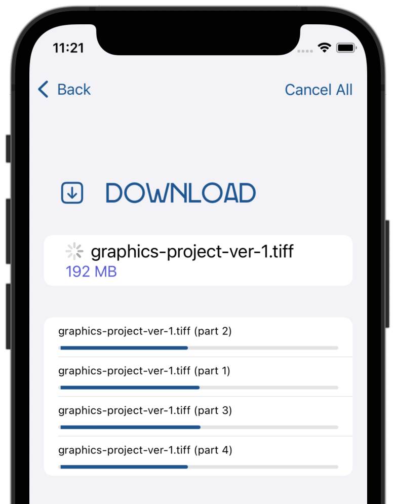
Getting to know AsyncSequence¶
AsyncSequence is a protocol describing a sequence that can produce elements asynchronously. Its surface API is identical to the Swift standard library’s Sequence, with one difference: You need to await the next element, since it might not be immediately available, as it would in a regular Sequence
Here are some common tasks you’d use an asynchronous sequence for:
- Iterating over the sequence in a
forloop, usingawaitand, if theAsyncSequenceis throwing,try. The code suspends at each loop iteration to get the next value:
for try await item in asyncSequence {
// Next item from `asyncSequence`
}
- Using the asynchronous alternative of a standard library iterator with a
whileloop. This is similar to using a synchronous sequence: You need to make an iterator and repeatedly callnext()usingawaituntil the sequence is over:
var iterator = asyncSequence.makeAsyncIterator()
while let item = try await iterator.next() {
...
}
- Using standard sequence methods like
dropFirst(_:),prefix(_:)andfilter(_:):
for await item in asyncSequence
.dropFirst(5)
.prefix(10)
.filter { $0 > 10 }
.map { "Item: \($0)" } {
...
}
- Using special raw-byte sequence wrappers, such as for file contents or when fetching from a server URL:
let bytes = URL(fileURLWithPath: "myFile.txt").resourceBytes
for await character in bytes.characters {
...
}
for await line in bytes.lines {
...
}
- Creating custom sequences by adopting
AsyncSequencein your own types. - Finally, you can create your very own custom async sequences by leveraging
AsyncStream. You’ll learn all about this option in the next chapter.
For an overview of all the Apple-provided types that are asynchronous sequences, visit AsyncSequence‘s online documentation (https://apple.co/3AS4Tkw). You’ll find the available types listed under Conforming Types.
Getting started with AsyncSequence¶
So far, you’ve done good work on the SuperStorage app including building the main screen, which displays a list of files. When the user selects a file, they see its details with three download options, one for each of the cloud service’s subscription plans:
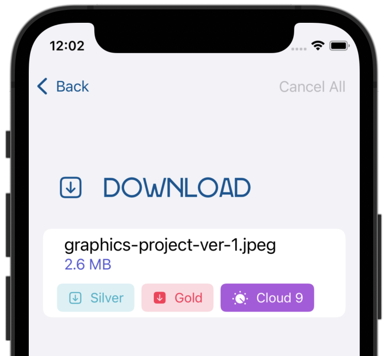
In the previous chapter, you coded the Silver download option, which fetches the complete file in one go and presents an onscreen preview.
You’ll start this chapter by implementing the Gold download option, which provides progressive UI updates as the file downloads.
You’ll achieve this by reading the file as an asynchronous sequence of bytes from the server. This lets you update the progress bar as you receive the file’s contents.
Adding your asynchronous sequence¶
Open the SuperStorage project and go to SuperStorageModel.swift, scrolling to downloadWithProgress(fileName:name:size:offset:). It already contains code to create the correct server URL. It also calls addDownload(name:) to add the download onscreen.
Next, insert this code before downloadWithProgress(fileName:name:size:offset:)’s return line:
let result: (downloadStream: URLSession.AsyncBytes, response: URLResponse)
Unlike before, when you used URLSession.data(for:delegate:) to return Data, you’ll use an alternative API that returns URLSession.AsyncBytes. This sequence gives you the bytes it receives from the URL request, asynchronously.
The HTTP protocol lets a server define that it supports a capability called partial requests. If the server supports it, you can ask it to return a byte range of the response, instead of the entire response at once. To make things a little more interesting, you’ll support both standard and partial requests in the app.
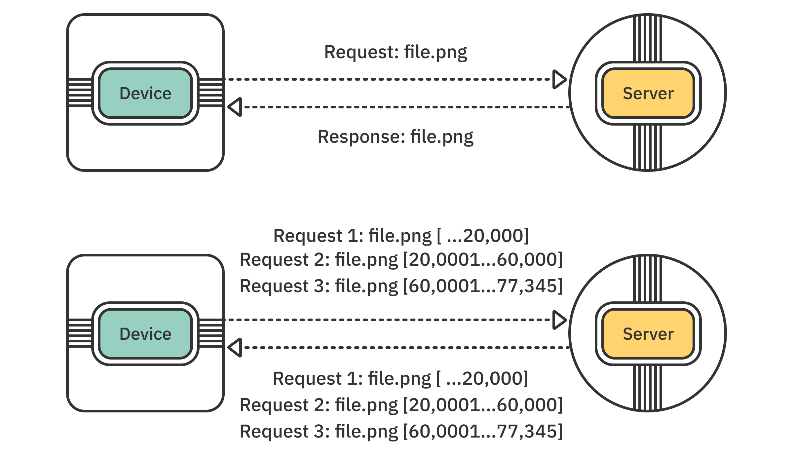
Using partial response functionality lets you split the file into parts and download them in parallel. You’ll need this functionality when implementing the Cloud 9 download option later in this chapter.
Continue by adding the code below to make a partial file request:
if let offset = offset {
let urlRequest = URLRequest(url: url, offset: offset, length: size)
result = try await
URLSession.shared.bytes(for: urlRequest, delegate: nil)
guard (result.response as? HTTPURLResponse)?.statusCode == 206 else {
throw "The server responded with an error."
}
}
If the code specifies an offset, you create a URL request and pass it to URLSession.bytes(for:delegate:), which returns a tuple of the response details and an async sequence that enumerates the bytes of the file.
This time, you check if the response code is 206, indicating a successful partial response.
Next, append the following else block, which handles a regular, non-partial request, to complete your if statement:
else {
result = try await URLSession.shared.bytes(from: url, delegate: nil)
guard (result.response as? HTTPURLResponse)?.statusCode == 200 else {
throw "The server responded with an error."
}
}
The code above is similar to what you did previously except that, this time, you’re checking for a 200 status and a successful server response.
Regardless of whether you make a partial or standard request, you end up with an asynchronous byte sequence available in result.downloadStream.
Using ByteAccumulator¶
Now, it’s time to start iterating over the response bytes. In this chapter, you’ll implement custom logic to iterate over the bytes. You’ll use a type called ByteAccumulator, which is included with the starter project, to fetch batches of bytes from the sequence.
Why do you need to process the file in batches? Not only is it more fun, but a file can contain millions or billions of bytes. You don’t want to update the UI after getting each byte.
ByteAccumulator will help you collect all of the file’s contents and update the UI only periodically, after fetching each batch of bytes:
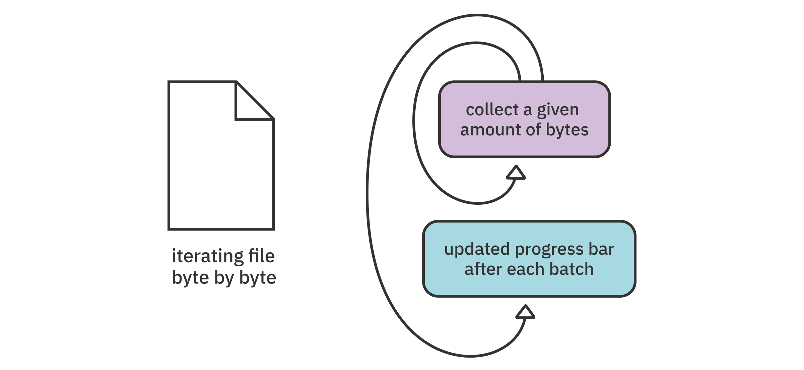
Note: If you’re curious to see how the accumulator works, peek into ByteAccumulator.swift.
To start using ByteAccumulator, append this code before the return statement for downloadWithProgress(fileName:name:size:offset:) in SuperStorageModel:
var asyncDownloadIterator = result.downloadStream.makeAsyncIterator()
AsyncSequence features a method called makeAsyncIterator(), which returns an asynchronous iterator for the sequence. You’ll use the returned asyncDownloadIterator to iterate over the bytes, one at a time.
Now, to add the accumulator and collect all the bytes, add the code that creates and uses the accumulator:
let accumulator = ByteAccumulator(name: name, size: size)
while !stopDownloads, !accumulator.checkCompleted() {
}
The first condition in the while loop checks if the model’s stopDownloads flag isn’t set. You’ll use this flag again in a bit.
The second condition checks if checkCompleted() returns false, which means the accumulator can still collect more bytes.
The combination of these two conditions gives you the flexibility to run the loop until either the external flag stopDownloads is lifted or the accumulator completes the download. With this design, you’re looking ahead and making the download code easily cancellable by using an external flag, if needed.
Next, insert the following code inside the while body:
while !accumulator.isBatchCompleted,
let byte = try await asyncDownloadIterator.next() {
accumulator.append(byte)
}
You use a second while loop that runs until the particular batch is full. The loop condition is similar to the outer while — you keep collecting bytes until either the isBatchCompleted flag is true or the byte sequence completes.
The code is so simple that if it weren’t for the single await keyword in there, you couldn’t tell it’s asynchronously processing a file while downloading it at the same time.
Updating the progress bar¶
After a batch completes, the execution continues after the while loop. This is the perfect place to update the download progress bar. Insert the following code after the inner while loop, still inside batch’s trailing closure:
Task.detached(priority: .medium) { [weak self] in
await self?
.updateDownload(name: name, progress: accumulator.progress)
}
print(accumulator.description)
In the code above, you might spot at least a couple of novelties that you haven’t covered yet.
First, you use Task.detached(...). This is the rogue version of creating a task with Task(priority:operation:). A detached task doesn’t inherit the parent’s priority, task storage or execution actor.
Note: Generally speaking, the documentation recommends against using Task.detached(...) because it negatively affects the concurrency model’s efficiency. In this case, however, there’s nothing wrong with using it to see how it works.
You create the task with a medium priority, so there’s no chance of it slowing down the ongoing download task.
Another interesting aspect is that you weakly capture self in the closure. Earlier, you learned that the new syntax mostly obliterates the need to manage memory manually. However, SuperStorageModel is a class — and, therefore, a reference type. That means the usual memory management rules apply when you use escaping closures, as you do here.
Secondly, you use await with the optional self?.updateDownload(...) — and that just works, like it does when you await non-optional values.
Last but not least, you print the current accumulator state to the output console so you can keep track of downloads during development.
To make sure you inserted the code in the right places, you’ll find the completed loop code below, so you can compare your code to it:
while !stopDownloads, !accumulator.checkCompleted() {
while !accumulator.isBatchCompleted,
let byte = try await asyncDownloadIterator.next() {
accumulator.append(byte)
}
Task.detached(priority: .medium) { [weak self] in
await self?
.updateDownload(name: name, progress: accumulator.progress)
}
print(accumulator.description)
}
Returning the accumulated result¶
To wrap up the the method you worked on in the last sections, replace the line return Data() with:
return accumulator.data
The newly completed method iterates over the download sequence and collects all the bytes. It then updates the file progress at the end of each batch.
Switch to DownloadView.swift and scroll to the closure parameter called downloadWithUpdatesAction. Insert this code inside the empty closure:
isDownloadActive = true
Task {
do {
fileData = try await model.downloadWithProgress(file: file)
} catch { }
isDownloadActive = false
}
The code above is identical to the code you added to downloadSingleAction in the previous chapter. This time, however, it calls downloadWithProgress(file:) to provide real-time updates to the progress bar.
This project interacts with the book-server web API. Before testing your code in the iOS Simulator, make sure you’re running the server app on your computer. To start the server, navigate to the server folder in the book materials-repository and enter swift run. The detailed steps are covered in more detail in Chapter 1, “Why Modern Swift Concurrency?”.
Build and run. Select a file and tap the Gold option to test your new code. You’ll see the progress bar update repeatedly as the file downloads:
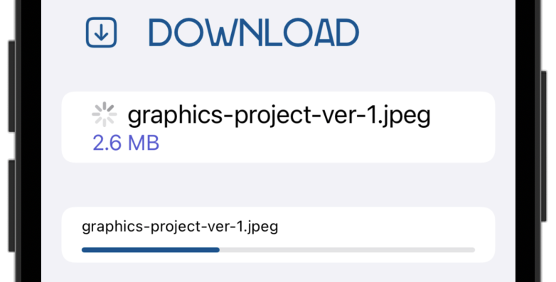
Even more reassuring is the console output that the while loop prints after each batch:
[graphics-project-ver-1.jpeg] 0.9 MB
[graphics-project-ver-1.jpeg] 1 MB
[graphics-project-ver-1.jpeg] 1.2 MB
[graphics-project-ver-1.jpeg] 1.3 MB
[graphics-project-ver-1.jpeg] 1.4 MB
[graphics-project-ver-1.jpeg] 1.6 MB
...
This output tells you at what point in the download you’re updating the progress bar, and you can easily calculate the size of each batch.
Congratulations, you now know most of what you need to know about using AsyncSequence!
Canceling tasks¶
Canceling unneeded tasks is essential for the concurrency model to work efficiently.
When you use one of the new APIs, like TaskGroup (which you’ll cover later in the book) or async let, the system can usually cancel the task automatically when needed.
You can, however, implement a finer-grained cancellation strategy for your task-based code by using the following Task APIs:
- Task.isCancelled: Returns
trueif the task is still alive but has been canceled since the last suspension point. - Task.currentPriority: Returns the current task’s priority.
- Task.cancel(): Attempts to cancel the task and its child tasks.
- Task.checkCancellation(): Throws a
CancellationErrorif the task is canceled, making it easier to exit a throwing context. - Task.yield(): Suspends the execution of the current task, giving the system a chance to cancel it automatically to execute some other task with higher priority.
When writing your asynchronous tasks, you’ll choose which APIs to use depending on whether you need a throwing function like checkCancellation() or if you’d like to manage the control flow yourself by checking isCancelled.
In the next section, you’ll implement your own custom cancellation logic using isCancelled.
Canceling an async task¶
To demonstrate why canceling tasks in a timely manner is important, run through the following scenario in the app:
Select one of the TIFF files and tap Gold to start a download with progress updates. Logs will appear in Xcode’s console as the accumulator collects more and more of the file’s content.
While the file is still downloading, tap the < Back button and observe the console. That download keeps going until it downloads the whole file!
Manually canceling tasks¶
So far, you wrote your async code inside a .task(...) view modifier, which is responsible for automatically canceling your code when the view disappears. But the actions for the download buttons aren’t in a .task(), so there’s nothing to cancel your async operations.
To fix this issue, you’ll manually cancel your download tasks. Start by adding a new state property to DownloadView:
@State var downloadTask: Task<Void, Error>?
In downloadTask, you’ll store an asynchronous task that returns no result and could throw an error. Task is a type like any other, so you can also store it in your view, model or any other scope. Task doesn’t return anything if it’s successful, so success is Void; likewise you return an Error if there’s a failure.
Next, scroll back to downloadWithUpdatesAction and replace the line Task { with:
downloadTask = Task {
This stores the task in downloadTask so you can access it later. Most importantly, it lets you cancel the task at will.
You’ll cancel the task when the user navigates back to the main screen. You already have some code in .onDisappear(...). Add this line immediately after model.reset():
downloadTask?.cancel()
Canceling downloadTask will also cancel all its child tasks — and all of their children, and so forth.
Build and run the app. Then, try to run the test scenario from above. You’ll notice that the progress logs in the console stop when you navigate back to the main screen.
Storing state in tasks¶
Each asynchronous task executes in its own context, which consists of its priority, actor and more. But don’t forget — a task can call other tasks. Because each might interact with many different functions, isolating shared data at runtime can be difficult.
To address this, Swift offers a new property wrapper that marks a given property as task-local.
Think for a moment about injecting an object into the environment in SwiftUI, which makes the object available not only to the immediate View, but also to all of its child views.
Similarly, binding a task-local value makes it available not only to the immediate task, but also to all its child tasks:
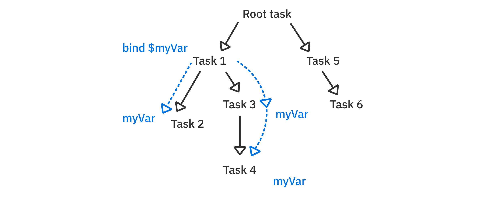
In this section of the chapter, you’ll learn how to use task-local storage to make a function’s behavior vary depending on the calling context.
More specifically, you’ll code the action for the Cancel All button on the download screen.
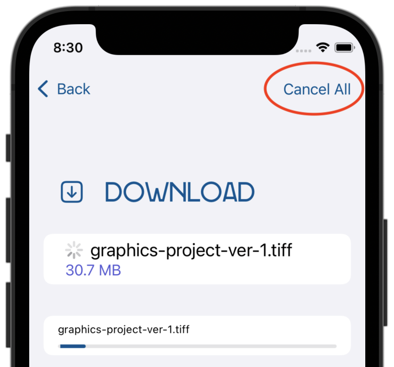
Adding a partial image preview¶
The JPEG format allows for partially decoding images, but other formats, such as TIFF, don’t allow for partial preview. So you’ll only support partial preview for JPEG files.
You’ll develop the following custom logic: If the user is downloading a JPEG image and cancels before it finishes, you’ll show the partially downloaded preview. For other image types, you’ll just abort the download.
Open SuperStorageModel.swift and add a new property to SuperStorageModel:
@TaskLocal static var supportsPartialDownloads = false
If the user initiates a JPEG download, you’ll set supportsPartialDownloads to true. You’ll then add some new code in SuperStorageModel to provide the appropriate behavior based on the flag’s value.
Note: Task-local properties need to be either static for the type, or global variables.
The @TaskLocal property wrapper offers a method called withValue() that allows you to bind a value to an async task — or, simply speaking, inject it into the task hierarchy.
Open DownloadView.swift. In the downloadWithUpdatesAction closure parameter, replace the line fileData = try await model.downloadWithProgress(file: file) with these lines:
try await SuperStorageModel
.$supportsPartialDownloads
.withValue(file.name.hasSuffix(".jpeg")) {
fileData = try await model.downloadWithProgress(file: file)
}
Here, you use withValue(_:) to bind whether or not the download supports partial downloads, based on the file’s extension. With the value bound, you call downloadWithProgress(file:).
You can bind multiple values this way, and you can also overwrite the values from inner bindings, like so (don’t enter this code):
try await $property1.withValue(myData) {
...
try await $property2.withValue(myConfig1) {
...
try await serverRequest()
try await $property2.withValue(myConfig2) {
...
}
}
}
In any case, you can see that using too many task-local storage properties might become difficult to read and reason about since you’ll need to wrap the code in a closure for each binding.
Note: In that sense, task storage is useful for binding fewer values: complete configuration objects or whole data models, rather than separate single values or flags as in the example above.
Adding the “Cancel All” functionality¶
While still in DownloadView.swift, scroll down toward the bottom of the file and find .toolbar(...). This is where you define the Cancel All button. Its action closure is empty, so add the following code inside:
model.stopDownloads = true
This time, instead of canceling the download task altogether, like you did in .onDisappear(...), you turn on the stopDownloads flag on SuperStorageModel. You’ll observe this flag while downloading. If it changes to true, you’ll know that you need to cancel your tasks internally.
To do that, open SuperStorageModel.swift and scroll to downloadWithProgress(fileName:name:size:offset:). Toward the bottom of that function, insert this code just before the return line:
if stopDownloads, !Self.supportsPartialDownloads {
throw CancellationError()
}
This is the task-specific behavior for your custom cancellation. After each downloaded batch, you check if stopDownloads is true and, if so, also check whether the download supports partial preview.
Then:
- If
Self.supportsPartialDownloadsisfalse, you throw aCancellationErrorto exit the function with an error. This stops the download immediately. - If
Self.supportsPartialDownloadsistrue, you continue the execution and return the partially downloaded file content.
It’s time to give that new feature a try. Build and run. Select a TIFF image, then start a Gold plan download. After a moment, tap Cancel All.
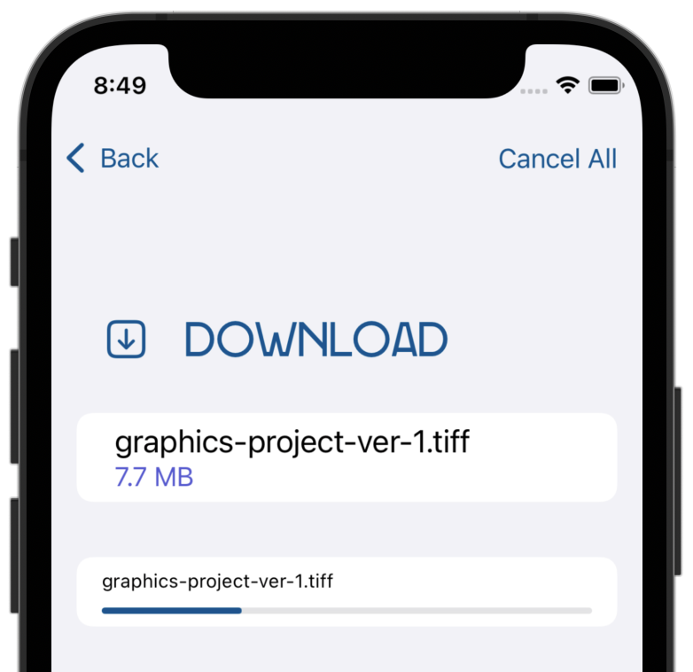
As you can see, the download stops. Your existing error-handling code catches the CancellationError and hides the spinner view without further updating the progress bar.
Now, try picking a JPEG image and running through the same routine:
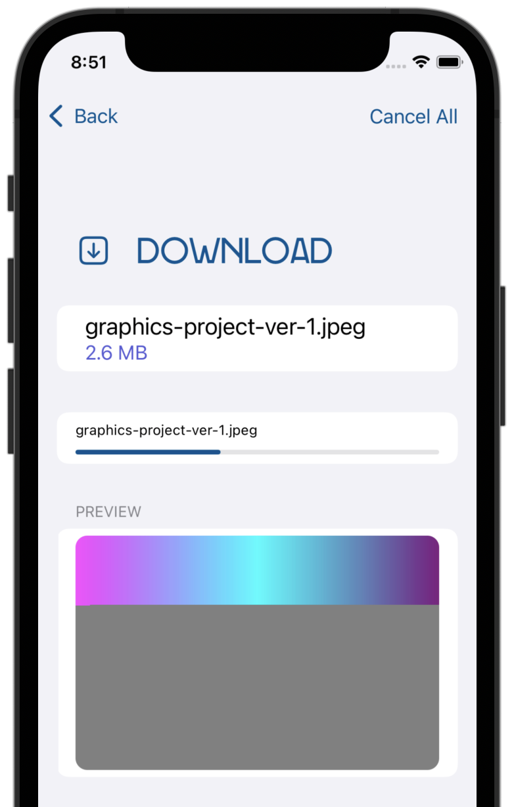
Here, your special behavior for JPEG files returns the partially downloaded image, while DownloadView displays a preview of the successfully downloaded part.
Bridging Combine and AsyncSequence¶
Combine is Apple’s reactive programming framework, based on the reactive streams specification. Its syntax is similar to RxSwift and other frameworks based on or inspired by the Rx standard. You can learn more about Combine by working through the book Combine: Asynchronous Programming With Swift (https://www.raywenderlich.com/books/combine-asynchronous-programming-with-swift).
Apple has integrated Combine into several key frameworks like Foundation and Core Data, among others:
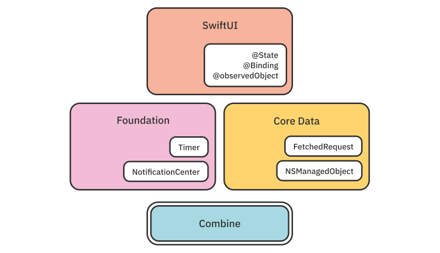
The simplicity of the Publisher protocol, which is the cornerstone of Combine, makes it universal and easy to adopt. A publisher can asynchronously emit zero, one or more values. It can, optionally, complete with a success or a failure:
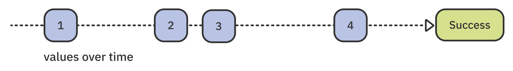
Wait a minute!
That looks more or less precisely like an async sequence. Wouldn’t it be fantastic if you could use async/await with all the existing Combine integrations from Apple, as well as with your own Combine code?
Yes, it would! And, fortunately, Apple offers an easy interface to do just that.
Adding a progress timer¶
In this section of the chapter, you’ll add a timer showing how long the user’s download is taking in real time:
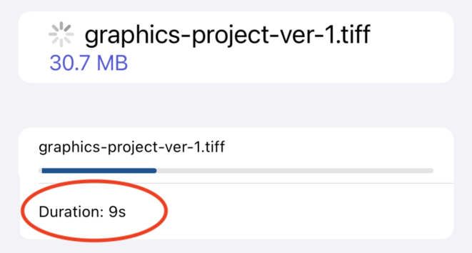
As usual, the starter project already includes the necessary UI code. DownloadView has a state property called duration that displays the duration below the progress bar.
The plan for the timer is to create a new async task whenever isDownloadActive changes to true and, in that task, create a Combine timer to update the UI periodically.
First, since you’re using Combine, add one more import line at the top of DownloadView.swift:
import Combine
Then, add a new property in DownloadedView to store the timer task so you can cancel it when you’re done:
@State var timerTask: Task<Void, Error>?
Next, find the property @State var isDownloadActive = false. The first thing you’d like to do when this flag is set to true or false is to cancel any previously running timer task. Add the following didSet accessor to downloadTask, so it looks like so:
@State var downloadTask: Task<Void, Error>? {
didSet {
timerTask?.cancel()
}
}
Then, if the user just started a new download, you want to note the start time. Add this code next, still inside the didSet accessor:
guard isDownloadActive else { return }
let startTime = Date().timeIntervalSince1970
You’ll use this later to calculate the duration based on the timer’s start time.
Creating the Combine-based timer¶
It’s time to create the Combine timer and use the asynchronous values property to proxy your Combine code so you can use it with await.
Add this code to create a Timer publisher immediately after setting startTime:
let timerSequence = Timer
.publish(every: 1, tolerance: 1, on: .main, in: .common)
.autoconnect()
.map { date -> String in
let duration = Int(date.timeIntervalSince1970 - startTime)
return "\(duration)s"
}
.values
Here’s what this code is doing, step-by-step:
Timer.publishcreates a Combine publisher that emits the current date every second.autoconnectmakes the publisher start ticking automatically whenever someone subscribes to it.mapcalculates the elapsed time in seconds and returns the duration as aString.- Finally, and most importantly,
valuesreturns an asynchronous sequence of the publisher’s events, which you can loop over as usual.
In fact, you can use for await with any Combine publisher by accessing its values property, which automatically wraps the publisher in an AsyncSequence.
Note: Similarly, the Future type in Combine offers an async property called value. This lets you await the future result asynchronously.
Completing the timer¶
Finally, still in the didSet accessor, add this code to create a new asynchronous task, store it in timerTask and loop over the sequence:
timerTask = Task {
for await duration in timerSequence {
self.duration = duration
}
}
Here, you iterate over timerSequence. Inside that loop, you assign each value to self.duration. As mentioned in the beginning of the section, duration is already wired to the UI, so the only thing left to do is test it.
Build and run. Select a file and choose the Gold download button. You’ll see that the duration summary appears below the progress bar and updates every second.
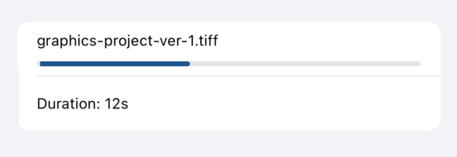
Before wrapping up this chapter, there’s one final easy-to-miss issue: Tap Cancel All, and you’ll notice the timer is still running.
To fix this, scroll down to the toolbar modifier and add the following line to the Button’s action closure:
timerTask?.cancel()
This will cancel the pending timer whenever you tap the Cancel All button. That’s it!
By completing the last task for this chapter, you’ve really become an async sequence pro user. If you’re hungry for more practice, however, stay around and work through this chapter’s challenge.
Challenges¶
Challenge: Implementing concurrent downloads for the “Cloud 9” plan¶
To try creating local structured concurrency on your own, your challenge is to implement the Cloud 9 download option. Don’t worry, the starter project already comes with all the non-concurrency code, letting you focus on the essential bits and pieces.
First, head to DownloadView.swift and, inside the downloadMultipleAction closure parameter, add a call to multiDownloadWithProgress(file:) on your model. This is just like what you did for the other download buttons.
Once you do that, head to SuperStorageModel.swift and find multiDownloadWithProgress(file:).
You’ll see that the function already includes code to break the file download into four parts and store them in the parts array. Each array element has the following properties:
- name: The part name.
- size: The part size in bytes.
- offset: The part’s offset within the complete file.
Luckily, these are also the exact parameters that downloadWithProgress(fileName:name:size:offset) expects, so putting the pieces together shouldn’t be too difficult.
On your own, you should:
- Define four promises with
async letthat each usedownloadWithProgress(fileName:name:size:offset)to download a part of the file. Use the data inparts. - Await all four downloads together to execute them concurrently.
- Combine the data from all the downloads to return the complete file content as the return value of
multiDownloadWithProgress(file:).
Once you’ve done all of the above, verify that tapping the Cloud 9 button kicks off four simultaneous downloads, like so:
The most telling sign that everything works as expected will be that the image preview appears correctly at the end of the download:
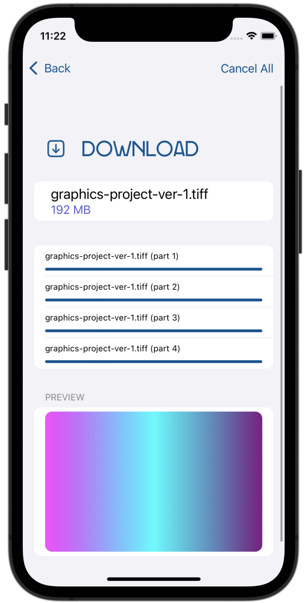
If you get stuck or want to compare your solution with what I had in mind for this code, look at the completed challenge project in this chapter’s materials.
Key points¶
AsyncSequenceis a protocol which resemblesSequenceand allows you to iterate over a sequence of values asynchronously.- You iterate over a sequence asynchronously by using the
for await ... insyntax, or directly creating anAsyncIteratorandawaiting itsnext()method in the context of awhileloop. Taskoffers several APIs to check if the current task was canceled. If you want to throw an error upon cancellation, useTask.checkCancellation(). To safely check and implement custom cancellation logic, useTask.isCancelled.- To bind a value to a task and all its children, use the
@TaskLocalproperty wrapper along withwithValue().
Earlier in this chapter, you learned there are a few ways to create your very own custom asynchronous sequence. Now, equipped with your newly earned mastery of leveraging existing asynchronous sequences, it seems like the perfect time to take a deep dive into AsyncStream, which lets you succinctly create your own asynchronous streams. You’ll also learn everything there is to know about the underlying protocols and interesting implementation details that power custom sequences. See you in the next chapter!